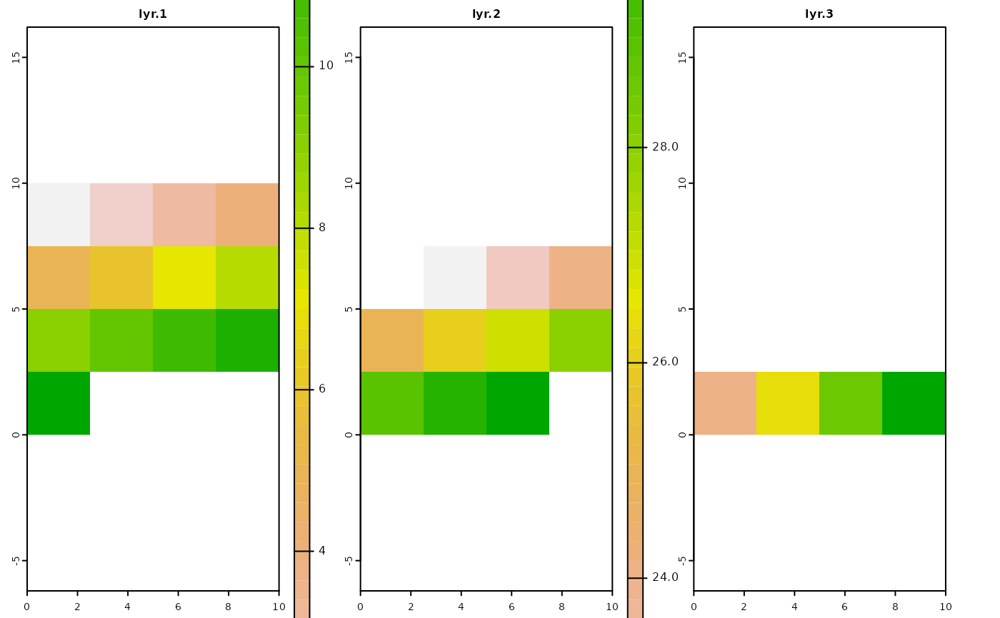
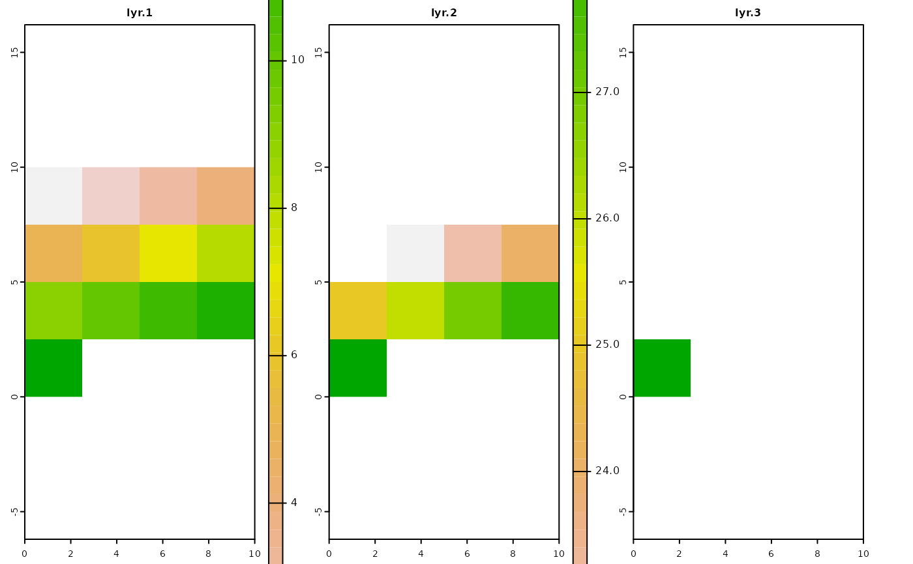
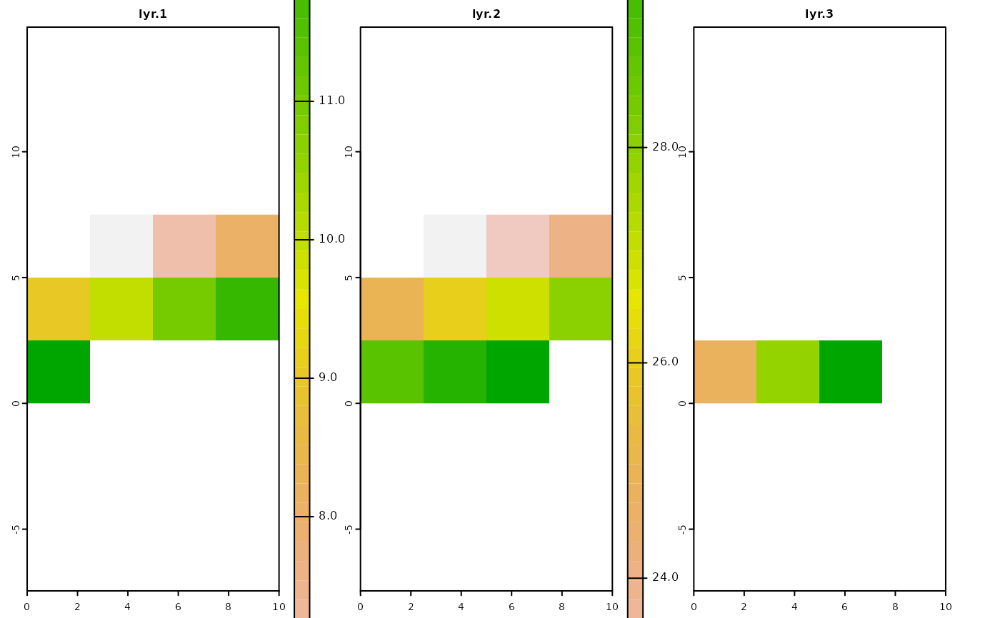
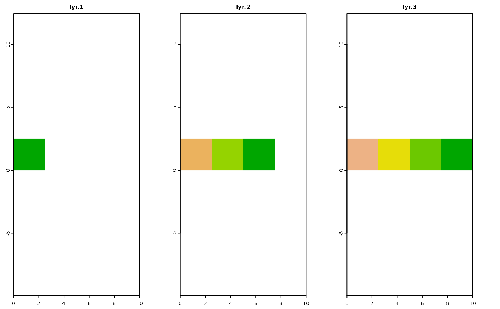
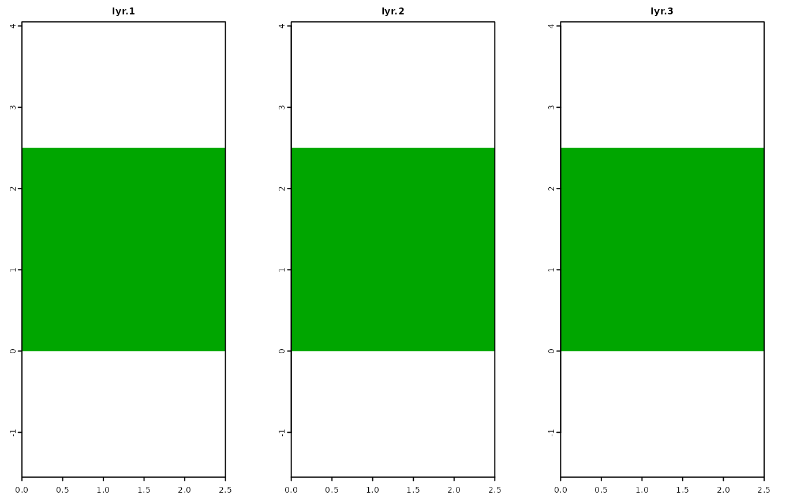

Drop cells and attributes of Spat* objects containing missing values
Source:R/drop_na.Spat.R
drop_na.Rd![[Questioning]](figures/lifecycle-questioning.svg)
drop_na() method drops cells and attributes where any layer or column
specified by ... contains a missing value.
Arguments
- data
A SpatRaster created with
terra::rast()or a SpatVector created withterra::vect().- ...
tidy-selectColumns or layers to inspect for missing values. If empty, all columns/layers are used.
Feedback needed!
Visit https://github.com/dieghernan/tidyterra/issues. The implementation of this method for SpatRaster may change in the future.
Methods
Implementation of the generic tidyr::drop_na() function.
SpatRaster
Actual implementation of drop_na().SpatRaster can be understood as a
masking method based on the values of the layers (see terra::mask()).
Raster layers are considered as columns and raster cells as rows, so rows
(cells) with any NA value on any layer would get a NA value. It is
possible also to mask the cells (rows) based on the values of specific
layers (columns).
drop_na() would effectively remove outer cells that are NA (see
terra::trim()), so the extent of the resulting object may differ of the
extent of the input (see terra::resample() for more info).
Check the Examples to have a better understanding of this method.
See also
Other tidyr.methods:
replace_na()
Examples
library(terra)
r <- rast(
crs = "epsg:3857",
extent = c(0, 10, 0, 10),
nlyr = 3,
resolution = c(2.5, 2.5)
)
terra::values(r) <- seq_len(ncell(r) * nlyr(r))
# Add NAs
r[r > 13 & r < 22 | r > 31 & r < 45] <- NA
# Init
plot(r, nc = 3)

# Mask with lyr.1
r %>%
drop_na(lyr.1) %>%
plot(nc = 3)

# Mask with lyr.2
r %>%
drop_na(lyr.2) %>%
plot(nc = 3)

# Mask with lyr.3
r %>%
drop_na(lyr.3) %>%
plot(nc = 3)

# Auto-mask all layers
r %>%
drop_na() %>%
plot(nc = 3)
